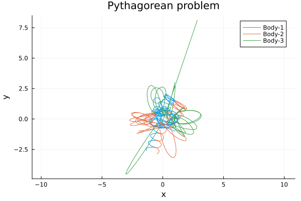
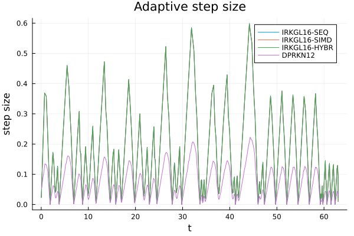
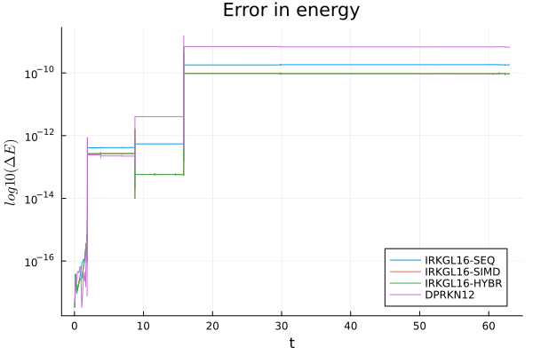

Pythagorean Three-Body Example
This example demonstrates the use of IRKGL16 for the classical Pythagorean three-body problem.
Three point masses attract each other according to the Newtonian law of gravitation. The masses of the particles are m1=3, m2=4, and m3=5; they are initially located at the apexes of a right triangle with sides 3, 4, and 5, so that the corresponding masses and sides are opposite. The particles are free to move in the plane of the triangle and are at rest initially.
Szebehely, V. 1967, "Burrau's Problem of Three Bodies", Proceedings of the National Academy of Sciences of the United States of America, vol. 58, Issue 1, pp. 60-65 postscript file
We demonstrate the solver on the classical Pythagorean three-body problem, a standard benchmark for high-precision integrators.
Step 1: Defining the problem
To solve this numerically, we define a problem type by giving it the equation, the initial condition, and the timespan to solve over:
using IRKGaussLegendre
using OrdinaryDiffEq
using Plots, LinearAlgebra, LaTeXStrings
using BenchmarkToolsfunction NbodyODE!(F,u,Gm,t)
N = length(Gm)
for i in 1:N
for k in 1:3
F[k, i, 2] = 0
end
end
for i in 1:N
xi = u[1,i,1]
yi = u[2,i,1]
zi = u[3,i,1]
Gmi = Gm[i]
for j in i+1:N
xij = xi - u[1,j,1]
yij = yi - u[2,j,1]
zij = zi - u[3,j,1]
Gmj = Gm[j]
dotij = (xij*xij+yij*yij+zij*zij)
auxij = 1/(sqrt(dotij)*dotij)
Gmjauxij = Gmj*auxij
F[1,i,2] -= Gmjauxij*xij
F[2,i,2] -= Gmjauxij*yij
F[3,i,2] -= Gmjauxij*zij
Gmiauxij = Gmi*auxij
F[1,j,2] += Gmiauxij*xij
F[2,j,2] += Gmiauxij*yij
F[3,j,2] += Gmiauxij*zij
end
end
for i in 1:3, j in 1:N
F[i,j,1] = u[i,j,2]
end
return nothing
endGm = [5, 4, 3]
N=length(Gm)
q=[1,-1,0,-2,-1,0,1,3,0]
v=zeros(size(q))
q0 = reshape(q,3,:)
v0 = reshape(v,3,:)
u0 = Array{Float64}(undef,3,N,2)
u0[:,:,1] = q0
u0[:,:,2] = v0
tspan = (0.0,63.0)
prob=ODEProblem(NbodyODE!,u0,tspan,Gm);Step 2: Solving the problem
After defining a problem, you solve it using solve:
Fully Sequential implementation
sol1=solve(prob,IRKGL16(simd=false,second_order_ode=true),adaptive=true, reltol=1e-14, abstol=1e-14);@btime solve(prob,IRKGL16(simd=false,second_order_ode=true),adaptive=true, reltol=1e-14, abstol=1e-14);16.409 ms (7651 allocations: 2.32 MiB)
Fully vectorized implementation
- 5 x faster than generic implementation !!
- Faster than DPRKN12 !!
sol2=solve(prob,IRKGL16(simd=true,fseq=false,second_order_ode=true),adaptive=true, reltol=1e-14, abstol=1e-14)@btime solve(prob,IRKGL16(simd=true,fseq=false,second_order_ode=true),adaptive=true, reltol=1e-14, abstol=1e-14);3.739 ms (7639 allocations: 2.82 MiB)
Hybrid implementation
sol3=solve(prob,IRKGL16(second_order_ode=true),adaptive=true, reltol=1e-14, abstol=1e-14)@btime solve(prob,IRKGL16(second_order_ode=true),adaptive=true, reltol=1e-14, abstol=1e-14);8.146 ms (7639 allocations: 2.82 MiB)
DPRKN12
function NbodyODE2nd!(ddu,du,u,Gm,t)
N = length(Gm)
for i in 1:N
for k in 1:3
ddu[k,i]= 0
end
end
for i in 1:N
xi = u[1,i]
yi = u[2,i]
zi = u[3,i]
Gmi = Gm[i]
for j in (i+1):N
xij = xi - u[1,j]
yij = yi - u[2,j]
zij = zi - u[3,j]
Gmj = Gm[j]
dotij = (xij*xij+yij*yij+zij*zij)
auxij = 1/(sqrt(dotij)*dotij)
Gmjauxij = Gmj*auxij
ddu[1,i] -= Gmjauxij*xij
ddu[2,i] -= Gmjauxij*yij
ddu[3,i] -= Gmjauxij*zij
Gmiauxij = Gmi*auxij
ddu[1,j] += Gmiauxij*xij
ddu[2,j] += Gmiauxij*yij
ddu[3,j] += Gmiauxij*zij
end
end
return nothing
endq0=u0[:,:,1]
v0=u0[:,:,2]
prob2nd = SecondOrderODEProblem(NbodyODE2nd!,v0,q0,tspan,Gm)
sol4 =solve(prob2nd,DPRKN12(),abstol=1e-14,reltol=1e-14);@btime solve(prob2nd,DPRKN12(),abstol=1e-14,reltol=1e-14, save_everystep=false);5.954 ms (45681 allocations: 947.80 KiB)
Convert solution data to u0 format
nk=length(sol4.t)
etype=eltype(u0)
sol4u=Vector{Array{etype, 3}}(undef,nk)
sol4t=Vector{etype}(undef,nk)
uk=copy(u0)
for k in 1:nk
uk[:,:,1]=sol4.u[k].x[2]
uk[:,:,2]=sol4.u[k].x[1]
sol4u[k]=copy(uk)
sol4t[k]=sol4.t[k]
endStep 3: Analyzing the solution
Orbits
bodylist = ["Body-1", "Body-2", "Body-3"]
pl = plot(title="Pythagorean problem",xlabel="x", ylabel="y",aspect_ratio=1)
ulist1 = sol1.u[1:end]
tlist1 = sol1.t[1:end]
for j = 1:3
xlist = map(u->u[1,j,1], ulist1)
ylist = map(u->u[2,j,1], ulist1)
pl = plot!(xlist,ylist, label = bodylist[j])
end
plot(pl)
Step Size
steps1 =sol1.t[2:end]-sol1.t[1:end-1]
plot!(sol1.t[2:end],steps1, label="IRKGL16-SEQ")
steps2 =sol2.t[2:end]-sol2.t[1:end-1]
plot!(sol2.t[2:end],steps2, label="IRKGL16-SIMD")
steps3 =sol3.t[2:end]-sol3.t[1:end-1]
plot!(sol3.t[2:end],steps3, label="IRKGL16-HYBR")
steps4 =sol4.t[2:end]-sol4.t[1:end-1]
plot!(sol4.t[2:end],steps4, label="DPRKN12")
Energy-Error
function NbodyEnergy(u,Gm)
N = length(Gm)
zerouel = zero(eltype(u))
T = zerouel
U = zerouel
for i in 1:N
qi = u[:,i,1]
vi = u[:,i,2]
Gmi = Gm[i]
T += Gmi*(vi[1]*vi[1]+vi[2]*vi[2]+vi[3]*vi[3])
for j in (i+1):N
qj = u[:,j,1]
Gmj = Gm[j]
qij = qi - qj
U -= Gmi*Gmj/norm(qij)
end
end
1/2*T + U
endsetprecision(BigFloat, 256)
u0Big=BigFloat.(u0)
GmBig=BigFloat.(Gm)
E0=NbodyEnergy(u0Big,GmBig)
ΔE1 = map(x->NbodyEnergy(BigFloat.(x),GmBig), sol1.u)./E0.-1
ΔE2 = map(x->NbodyEnergy(BigFloat.(x),GmBig), sol2.u)./E0.-1
ΔE3 = map(x->NbodyEnergy(BigFloat.(x),GmBig), sol3.u)./E0.-1
ΔE4 = map(x->NbodyEnergy(BigFloat.(x),GmBig), sol4u)./E0.-1
plot(title="Error in energy", legend=:bottomright,
xlabel="t", ylabel=L"log10(\Delta E)")
plot!(sol1.t[2:end], abs.(ΔE1[2:end]), yscale=:log10, label="IRKGL16-SEQ")
plot!(sol2.t[2:end], abs.(ΔE2[2:end]), yscale=:log10, label="IRKGL16-SIMD")
plot!(sol3.t[2:end], abs.(ΔE3[2:end]), yscale=:log10, label="IRKGL16-HYBR")
plot!(sol4t[2:end], abs.(ΔE4[2:end]), yscale=:log10, label="DPRKN12")